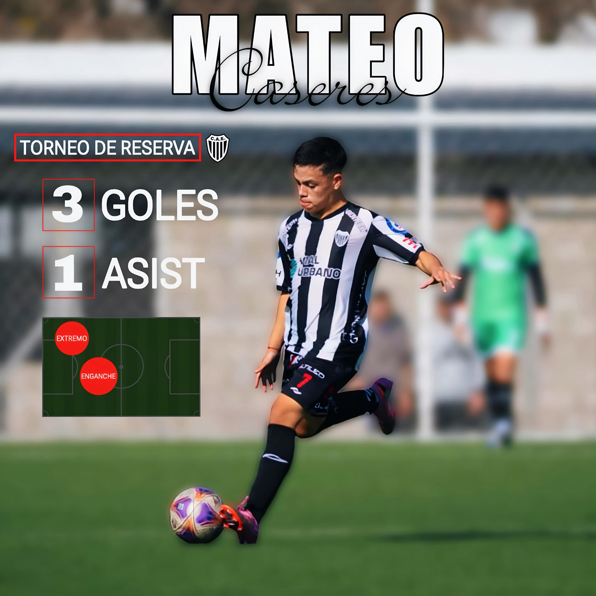
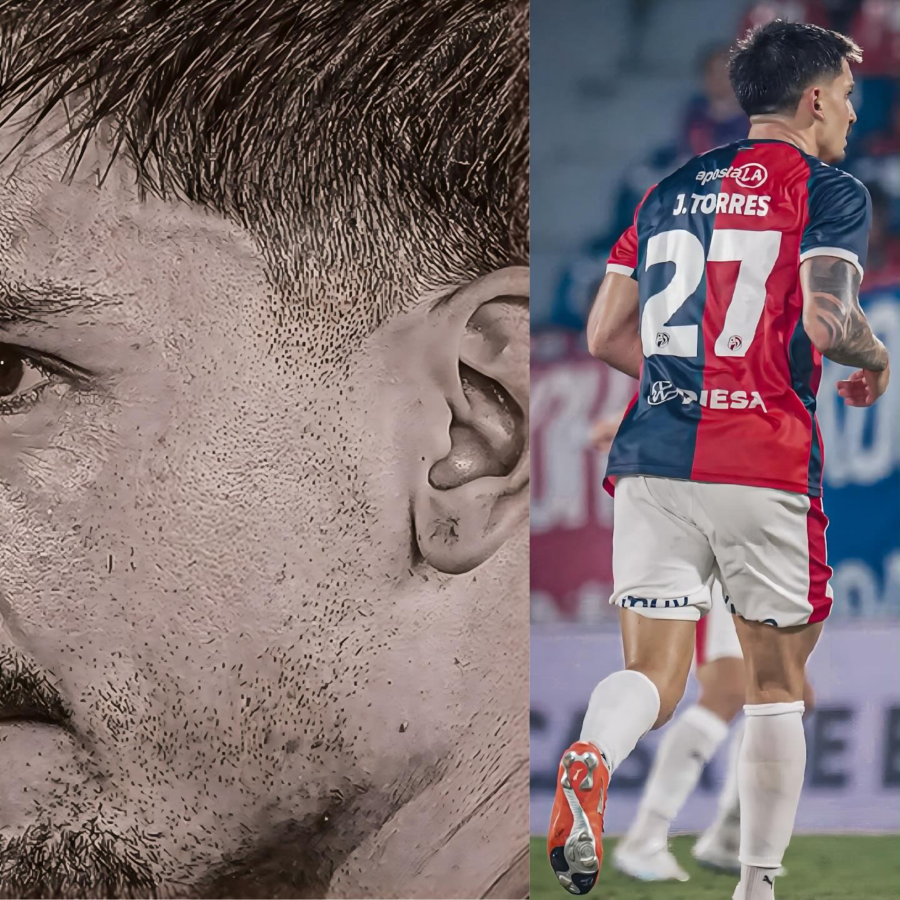
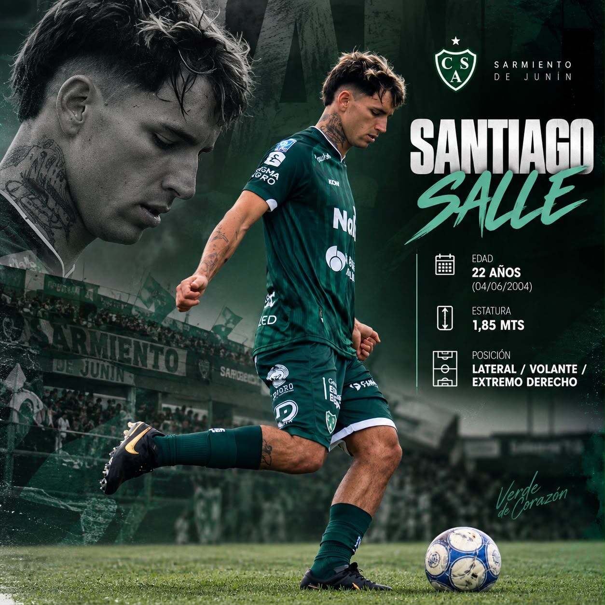
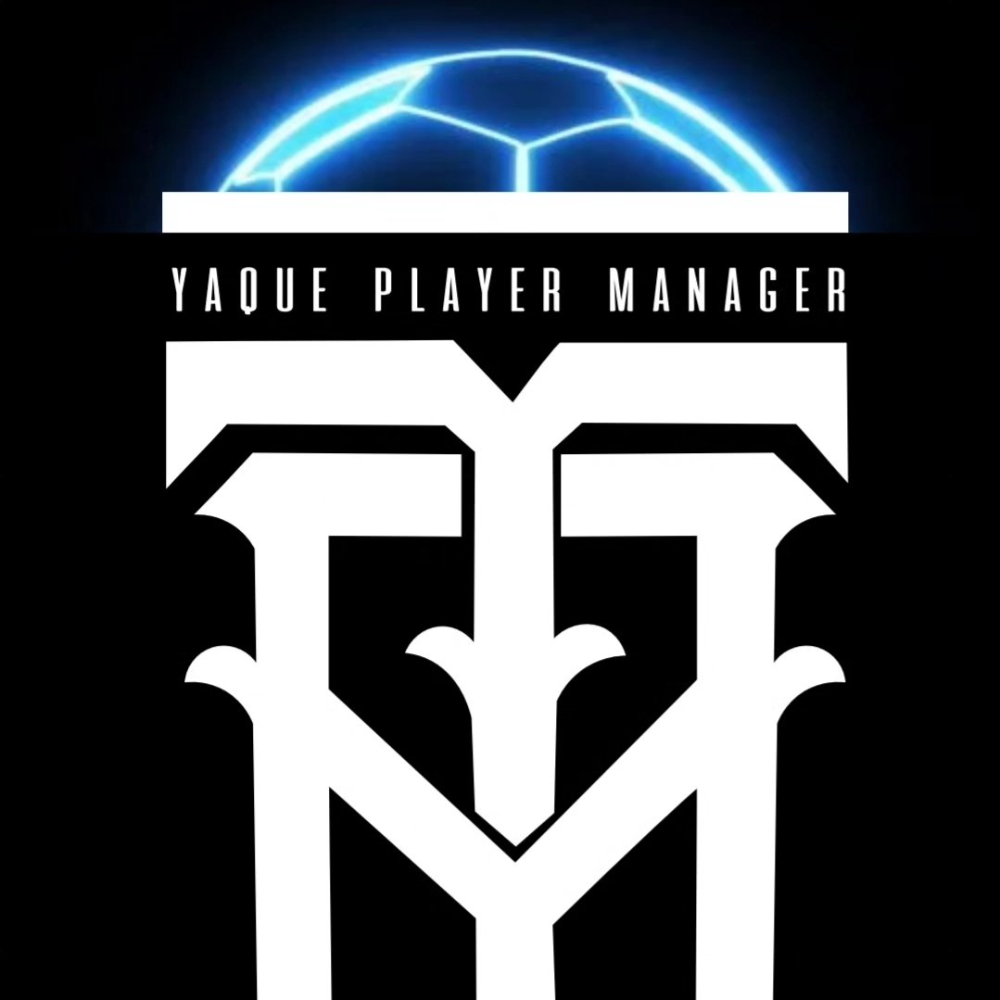

✳ REPRESENTACIÓN E INTERMEDIACIÓN
EL JUEGO
TAMBIÉN SE
JUEGA AFUERA.
Representamos futbolistas y acompañamos sus carreras con una gestión cercana, profesional y pensada para cada proyecto.



SIETE HISTORIAS. UN MISMO EQUIPO.
LOS QUE
VAN AL FRENTE.
JUGADORES
REPRESENTADOS
✳ Cada carrera es única. En YAQUE acompañamos a nuestros jugadores con una representación cercana y profesional.
NO SE TRATA SOLO DE FÚTBOL.
SE TRATA
DE TODO LO
QUE VIENE.
MANAGERP
El talento abre la puerta. El trabajo, las decisiones y el acompañamiento ayudan a construir el camino.
En YAQUE PLAYER MANAGER trabajamos en la representación e intermediación de futbolistas y en la gestión de sus carreras deportivas. Entendemos que cada jugador tiene una historia, objetivos y tiempos propios. Por eso, cada proyecto se trabaja de manera particular, con compromiso y una mirada integral.
Así trabajamos ↘NUESTROS SERVICIOS
CADA CARRERA
TIENE SU
PLAN.
UNA MIRADA INTEGRAL
PARA CADA ETAPA.
Representación
Acompañamos la gestión y negociación de contratos, y trabajamos junto a cada futbolista para encontrar oportunidades que impulsen su recorrido profesional.
Patrocinios
Acercamos a nuestros representados a marcas afines a sus valores, creando acuerdos que acompañen su crecimiento y amplíen sus oportunidades.
Desarrollo integral
Según las necesidades de cada etapa, articulamos apoyo de profesionales como preparadores físicos, nutricionistas y psicólogos deportivos.
Intermediación
Colaboramos con futbolistas, agentes y clubes para acercar a las partes y facilitar acuerdos dentro del ámbito del fútbol.
Imagen y medios digitales
Potenciamos la presencia de cada cliente en redes y plataformas digitales con propuestas de comunicación pensadas a medida.
LA MEJOR JUGADA ES EN EQUIPO
EL FÚTBOL SE JUEGA
EN EQUIPO. LA CARRERA,
TAMBIÉN.
Escuchar. Analizar. Planificar. Acompañar. Una gestión cercana y profesional, con el foco puesto en las personas detrás de cada jugador.
Conectá con YAQUE ↗¿HABLAMOS?
TODO
EMPIEZA
CON UNA
CHARLA.
Para consultas sobre representación, intermediación o gestión deportiva, conectate con YAQUE PLAYER MANAGER.
Escribinos por Instagram ↗
AGENTE DEPORTIVO
REPRESENTACIÓN · INTERMEDIACIÓN
GESTIÓN DEPORTIVA